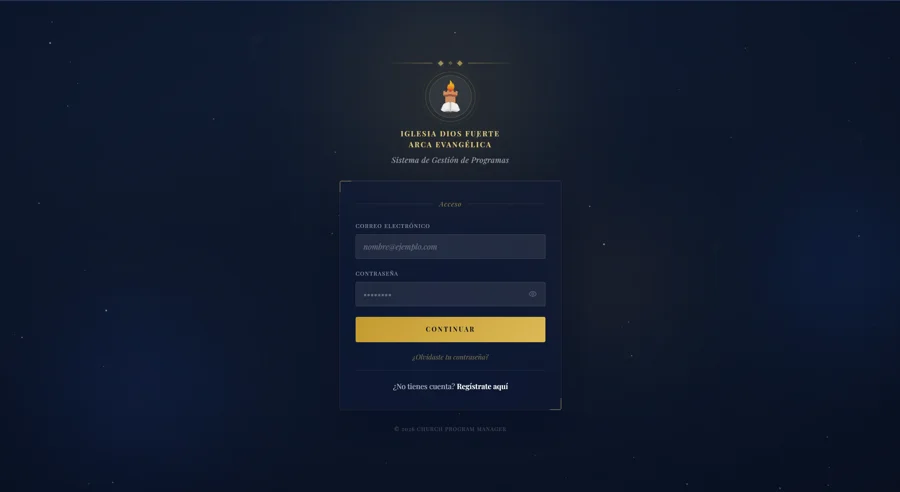
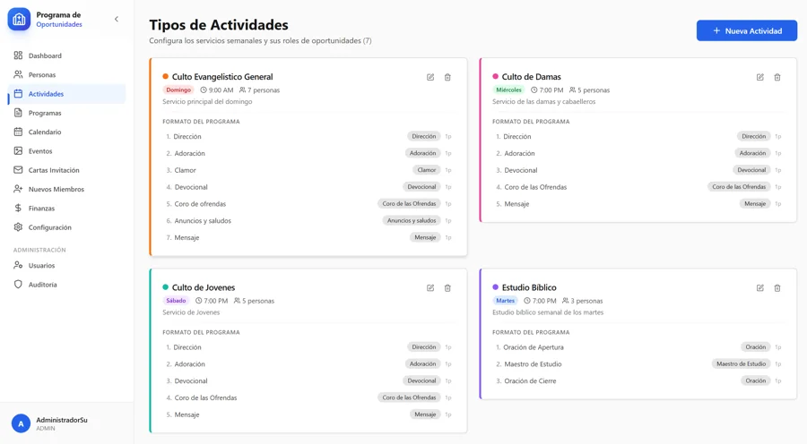
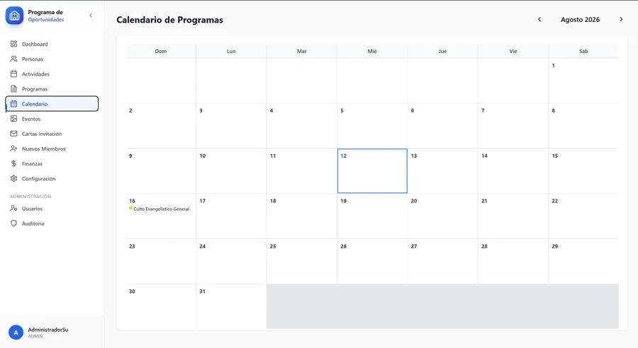
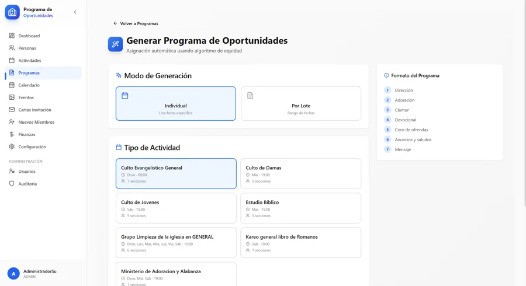
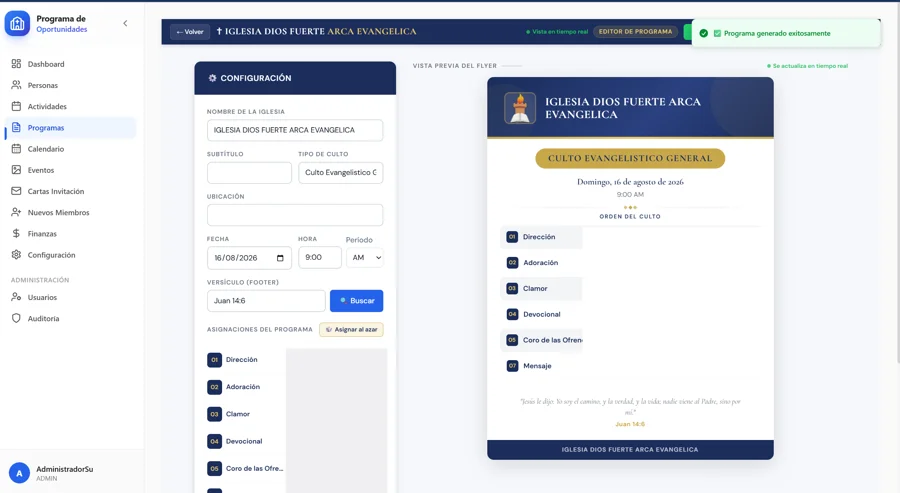
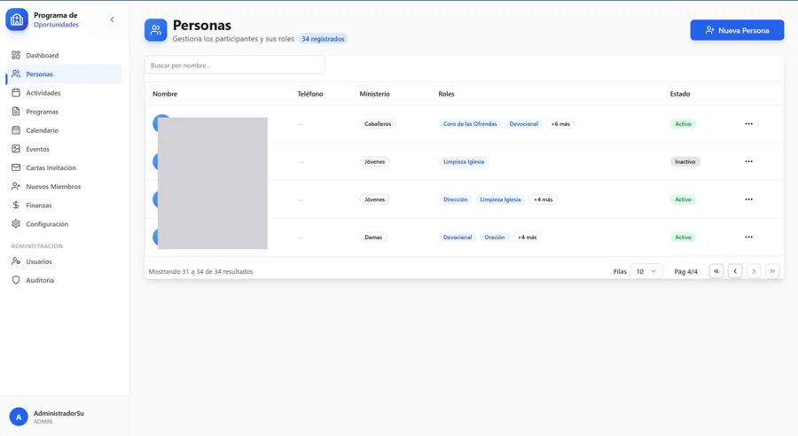
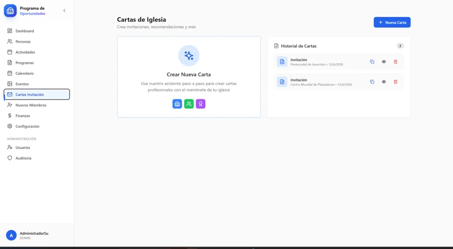
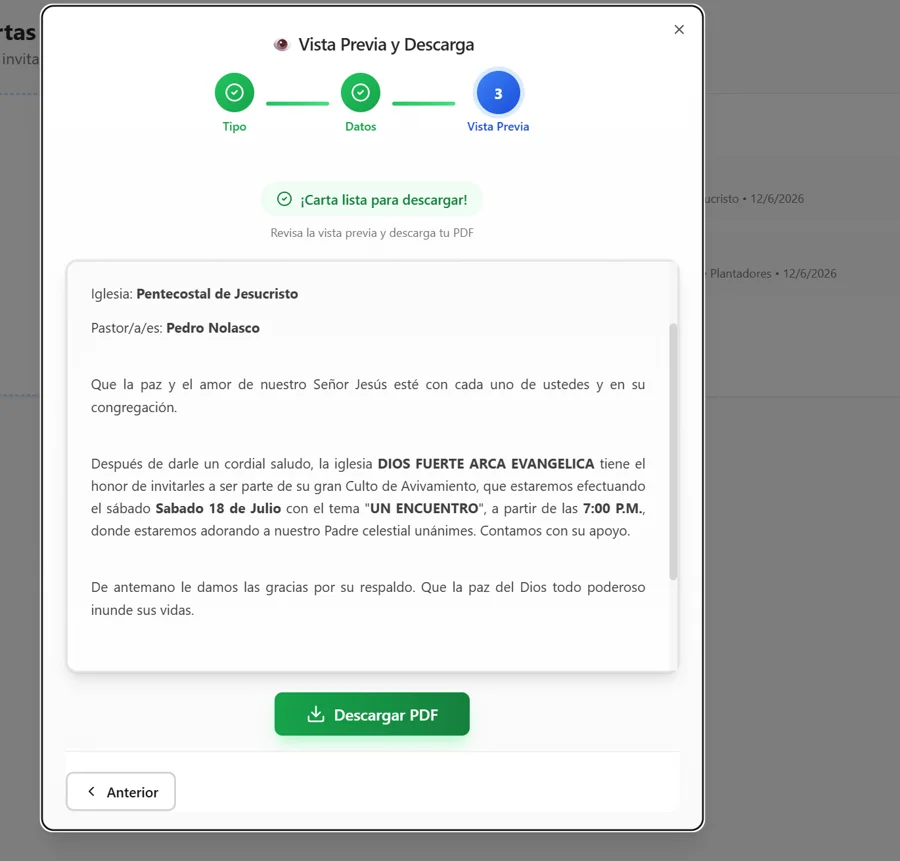

El contexto
Iglesia Dios Fuerte Arca Evangélica necesitaba organizar sus programas de servicio semanales — quién dirige, quién adora, quién predica, quién limpia — sin depender de una hoja de cálculo ni de la memoria de un coordinador. El sistema, Church Program Manager, ya existía en una primera versión (v1), pero tenía problemas reales de fondo que este proyecto (v2) se encargó de corregir de raíz.
El reto
La v1 tenía un bug crítico en el motor de asignación: el algoritmo de equidad no priorizaba
correctamente a las personas con menos participación reciente, además de generar consultas N+1 a la
base de datos por cada cálculo. A eso se sumaba una brecha de seguridad seria para un sistema que
maneja datos de varias iglesias: el churchId podía llegar manipulado desde el cuerpo de
la petición en vez de derivarse siempre del token de autenticación — es decir, nada impedía en el
código que una iglesia viera o modificara datos de otra.
La solución
La v2 fue una reescritura enfocada en seguridad, corrección y automatización, no en features cosméticas:
- Tenant Guard — middleware que fuerza que el
churchIdvenga siempre del JWT, nunca del body, y verifica que la iglesia esté activa contra la base de datos (con cache Redis de 5 minutos para no penalizar cada request). - RBAC de 6 roles — jerarquía SUPER_ADMIN > PASTOR > ADMIN > MINISTRY_LEADER > EDITOR > VIEWER, aplicada a nivel de middleware en cada ruta.
- AssignmentEngine v2 — el motor de asignación se dividió en un
FairnessCalculator(score normalizado en 3 componentes, donde menor participación reciente ahora sí significa mayor prioridad) y unHistoryAnalyzerque precarga el historial en memoria antes de calcular, eliminando el antipatrón N+1 de la v1. - Cache Redis con fallback — si Redis no está disponible, el sistema cae automáticamente a un Map en memoria en vez de fallar.
- Notificaciones asíncronas — colas con Bull + Redis para enviar recordatorios por email y WhatsApp 48 horas antes de cada servicio, disparadas al publicar un programa.
- Generación de PDF — Puppeteer + plantillas Handlebars para exportar el programa con el logo, los colores de marca y la firma del pastor de cada iglesia, con marca de agua en el plan gratuito.
El desafío técnico más interesante: aislamiento multi-tenant real
En un sistema que sirve a varias iglesias desde la misma base de datos, la frontera entre "mis
datos" y "los datos de otra iglesia" no puede depender de que el cliente envíe el dato correcto —
tiene que estar garantizada en el servidor, siempre. El Tenant Guard resuelve esto sobrescribiendo
cualquier churchId que llegue en el body de la petición con el que viene firmado en el
JWT, y además valida contra la base de datos que esa iglesia esté activa antes de dejar pasar la
petición — con cache para que esa validación no cueste una consulta extra en cada request. Es la
diferencia entre "confiar en el cliente" y "verificar en el servidor", aplicada de forma consistente
en cada endpoint mediante un middleware, no caso por caso.
Funcionalidades clave
- Motor de asignación automática con algoritmo de equidad corregido y sin N+1 queries
- Seguridad multi-tenant con Tenant Guard y RBAC de 6 roles
- Generación de PDF de programas con marca dinámica por iglesia (logo, colores, firma)
- Recordatorios automáticos por email y WhatsApp 48h antes de cada servicio
- Gestión de personas, ministerios, roles y actividades recurrentes
- Sistema de cartas de invitación con asistente paso a paso y exportación a PDF
- Dashboard con métricas y descarga directa de programas
- Planes por iglesia (FREE / PRO / ENTERPRISE) con límites configurables
Capturas del sistema








Stack técnico
Backend: Node.js · TypeScript · MongoDB · Redis · Bull · Puppeteer · Handlebars · JWT
Frontend: React · Vite · TypeScript